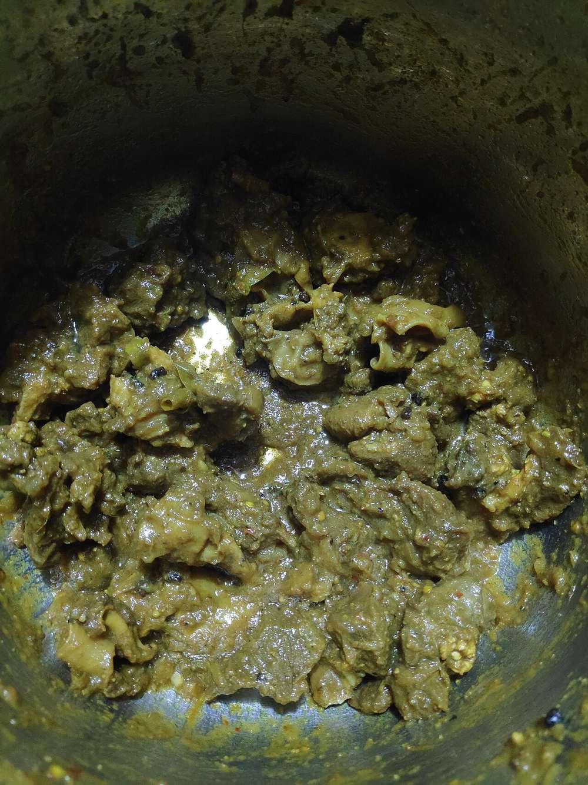

Khatta Meat
chamba mutton curry made sour with pomegranate seed and dried mango, thin and fiercely spiced

Contains: mustard
Checked against the ingredient list for ten allergens: milk, egg, fish, crustaceans, tree nuts, peanuts, sesame, mustard, soy and gluten. Brands vary, so read the label on anything new to you.
Ingredients
Quantities for 4.
- 750g, bone-in, cut into 4cm pieces Muttonshoulder and neck give the best gravy
- 4 tbsp Mustard Oil
- 2 medium, finely sliced Onion
- 1 tbsp, paste Ginger
- 1 tbsp, paste Garlic
- 2 tbsp, coarsely ground Anardanathe defining sourness. Do not substitute lemon
- 1 tsp Amchur
- 2 tsp Coriander Powder
- 1.5 tsp Chilli Powder
- 1 tsp Turmeric
- 1 tsp Cumin Seeds
- 2 Black Cardamom
- 1 piece, 3cm Cinnamon
- 4 Cloves
- 1 Bay Leafoptional
- 1 tsp Garam Masala
- 1 tsp Jaggeryrounds off the sourness without sweetening the curryoptional
- 600ml Water
- to taste Salt
- 2 tbsp, chopped Coriander Leavesoptional
Cookware
stovetop, pressure cooker
Before you start
- Bring the mutton to room temperature for 30 minutes before cooking. Cold meat straight from the fridge seizes in hot oil.
- Grind the anardana coarsely in a dry grinder just before you cook. Pre-ground pomegranate seed goes flat and stale within weeks.
- Heat the mustard oil to smoking point and let it cool for a minute before you start. Raw mustard oil is harsh and this curry has nowhere to hide it.
Method
- Heat the mustard oil until it smokes, cut the flame for 60 seconds, then return it to medium.
- Crackle the cumin, black cardamom, cinnamon, cloves and bay leaf for 30 seconds until the cardamom smells smoky.
- Add the sliced onion and fry 10-12 minutes to a deep even brown, stirring often.Brown, not black. Burnt onion turns the whole curry bitter and there is no fixing it.
- Stir in the ginger and garlic pastes and fry 2 minutes until the raw smell lifts.
- Add the mutton and brown it hard over high heat for 8 minutes, stirring so every piece takes colour.Do this in two batches if your pan is crowded. Steamed meat gives a pale, thin curry.
- Lower the heat, add the turmeric, coriander powder, chilli powder and salt, and fry 4 minutes until oil beads at the edges.
- Pour in 600ml water, bring to a boil, then pressure cook 4 whistles and rest until the pressure drops on its own, about 20 minutes.
- Open the cooker, stir in the ground anardana and the amchur, and simmer uncovered 12 minutes. The gravy stays deliberately thin.Add the sour agents only now. Cooking them under pressure makes them dull and slightly bitter.
- Add the jaggery and garam masala, simmer 3 minutes, taste for salt and sourness.
- Rest 10 minutes off the heat, scatter the coriander and serve with steamed rice.
Storage
Keeps 3 days refrigerated, better on the second day once the anardana settles. Reheat over low heat with a splash of water; do not boil hard or the meat tightens.
Nutrition Medium estimate
High protein: 40 g a serving, 42% of the calories
| Per serving285 g | Per 100 g | |
|---|---|---|
| Calories | 388 kcal | 137 kcal |
| Protein | 40.4 g | 14 g |
| Carbohydrate | 13.0 g | 4 g |
| of which sugars | 5.5 g | 2 g |
| Fibre | 2.8 g | 1 g |
| Fat | 19.2 g | 7 g |
| of which saturated | 3.1 g | 1 g |
| of which unsaturated | 14.1 g | 5 g |
Ingredients given to taste count as zero, so the real figures run a little higher. Nearest database match used for amchur, garam masala, jaggery, mutton. Estimated from raw ingredients using USDA FoodData Central.
Written and checked against sources, not cooked in a test kitchen. Times, yields, allergens and nutrition are worked out rather than measured, so use your own judgement on doneness and on storing. More in About.